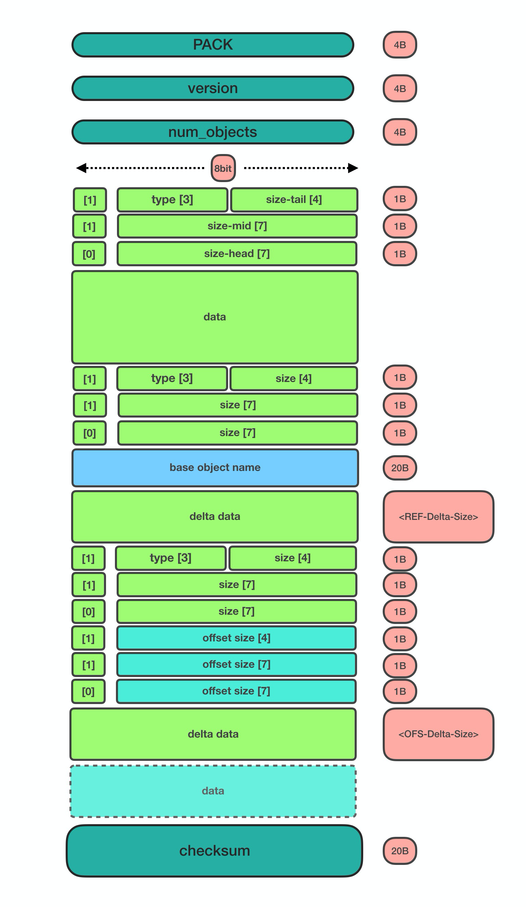
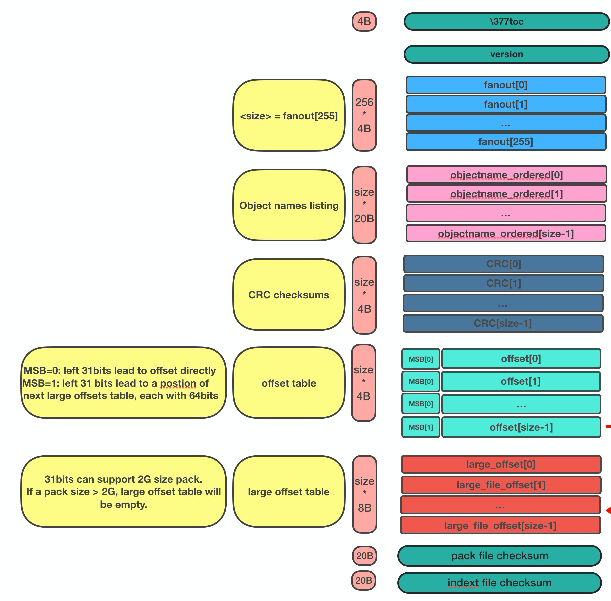
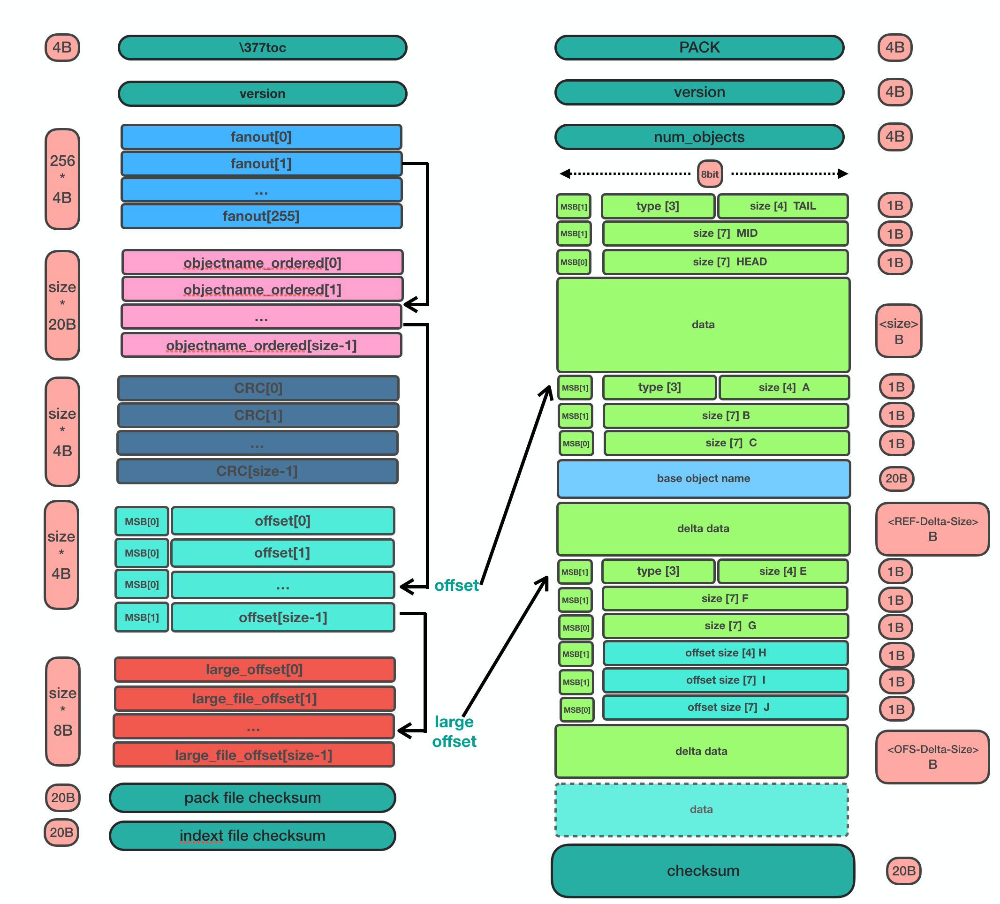

`This article is written in Chinese. `
About pack and index file in git.
1. git packfile 介绍
首先我们要了解的事， Git中使用 对象 来保存我们的修改内容和历史,关于Git对象的分类, 目前有两种不同的 分法 :
-
将Git对象分类为 4 个, 这个也是比较常见的分法, 其中包含 blob/tree/commit/tag.
-
在第1种分类的基础上, 将 packfile (使用zlib来对其他对象压缩后的文件) 作为第 5 种对象(wiki中的packfile的说明).
如果希望了解Git的4种基本对象和为什么他们基于 快照 的存储策略，我之前写过一篇 《15分钟了解Git对象》。
现在我们回过来继续看packfile.
Git通过blob/tree/commit/tag来存储对象, 这些对象本质上都是git仓库中的存储的文件。 如果对象文件较少， 仓库的性能还可以接受。 但随着仓库提交越来越多， 这些松散存储（每个对象都是一个文件）的对象文件会越来越多，并且占用的体积会越来越大（存储快照而非差异）, 会导致仓库性能随之下降。所以Git需要一种聚合的存储方式，试图将这些松散的文件组织起来， 从而解决这个问题， 这就是`packfile`的由来。
Packfile中除了可以包含上面提到的blob/tree/commit/tag对象外, 还可以支持存储 delta 对象。delta对象是一种更加高效的存储方式(但是可能额外消耗计算资源), 它可以实现在pack中存储对象之间的差异, 而非重新存储整个对象, 这在一定程度上降低了packfile文件的体积。（例如,存在一个100M的文本文(base对象),修改修改10次,但是每次改动都只新增了一行, 那基于blob的delta的存储方式可以节约1000M的存储空间。）
2. pack的文件的存储格式
关于packfile的存储格式, git-scm中有比较详细的文档 英文介绍, 我在这里画了一个图，其中主要包含三个部分： 文件头， 包含的对象的存储内容和文件尾， 我们依次来看下它们的结构:

2.1 HEADER 和 TRAILER
HEADER由三部分构成。
2.1.1 packfile文件签名
用来存放"PACK"的字面量（50 41 43 4b），共4 bytes。
2.1.2 packfile版本
目前默认采用v2版本(00 00 00 02)，共4 bytes
2.1.3 packfile中的对象数量
对象数量: <num_objects>，共4 bytes。
TRAILER pack文件的checksum（20 bytes）。
2.2 DATA部分
按照pack-order存储各个对象，其中非delta对象和delta对象的存储格式有所差异。
2.2.1 size data encoding
这部分数据采用<size-data-encoding>的方式存储，bigendian，每一个size chunk为 1byte, 第一个chunk比较特殊还负责保存对象的类型信息:
得知了对象的size之后， 便可以继续获取数据的data了。
2.2.2 delta对象存储上的差别
delta数据是从base object基础上重新构造对象的一套指令序列（instruments）。如果base object同样是一个delta，则必须首先将其还原为普通对象， 就这样递归往复直到base object不是delta对象为止， 这样就还原出了完整的对象。目前支持的指令有两个:一个用于从源对象复制字节范围，另一个用于插入嵌入到指令本身的新数据。
也许你会问， 这篇文章究竟要介绍什么？
是的，这篇文章希望讲述git multiple packs index的内容，所以目前为止， 我说了很多pack的内容，这点上似乎无法偷懒。 但也许我该就此打住， 因为Delta的存储和计算牵扯出另外非常多的内容， 再用另一篇单独的BLOG中讲解（同时我也需要再一次确认很多其中的细节）， 当然也可以先参考 git-scm文档 的内容先睹为快。
3. pack-index
pack-index在在文件命名上， 它的名字是`pack-name.idx`， 其中pack-name是pack文件的名字, name是pack文件checksum的SHA1编码 。pack文件则是`pack-name.pack`命名，通过文件名将index和pack文件联系在一起， 并可通过文件名和实际存储的checksum进行校验。
下面是我本地测试仓库中的一个一个样例：
[tenglong.tl@code-infra-dev-cbj.ea134 /home/tenglong.tl/test/pack-test.git/.git/objects/pack]
$ll
total 24
-r--r--r-- 1 tenglong.tl users 1156 Feb 18 16:17 pack-5861a641a77e5fa0637b6426615c834424012140.idx
-r--r--r-- 1 tenglong.tl users 262 Feb 18 16:17 pack-5861a641a77e5fa0637b6426615c834424012140.pack
-r--r--r-- 1 tenglong.tl users 1156 Feb 16 14:52 pack-bbe47ea26bb124a49bbb93aaebf067c7971843c4.idx
-r--r--r-- 1 tenglong.tl users 210 Feb 16 14:52 pack-bbe47ea26bb124a49bbb93aaebf067c7971843c4.pack
-r--r--r-- 1 tenglong.tl users 1156 Feb 18 16:17 pack-f81aa0c5662aa3f1b084f63f80d7417b5f41b74d.idx
-r--r--r-- 1 tenglong.tl users 293 Feb 18 16:17 pack-f81aa0c5662aa3f1b084f63f80d7417b5f41b74d.packpack索引文件的的作用是， 根据object名称创建到pack文件中存储位置（offset）的映射， 在时间复杂度为O(logN)的情况下，快速获取对象的存储内容。
3.1 pack-index文件格式
pack index文件存在两个版本， 目前默认按照v2进行存储，我们也将针对v2进行介绍.
pack-index v2文件格式

v2的文件存储格式分为以下几个部分：
3.1.1 HEADER
-
v2版本idx文件的签名信息： "\377tOc" 占 4 bytes
git使用了这样一个魔法值 来表示这是一个v2 版本的pack-index文件，可以看出这是一个8进制表示，如果用10进制则为255tOc。 因为v1版本是直接从fanout区开始存储 >（fanout后面会介绍）， 而该魔法值明显是一个非法的fanout[0]的取值。 这样就可以防止低版本的git， 错误的处理v2版本的pack idx文件。
-
idx文件的版本号： 目前默认为2， 占4 bytes
3.1.2 FANOUT
FANOUT扇区表用来存储每个object的存储位置， 每个扇区占用的空间是4个字节。 根据objectname的第一个字节进行划分扇区，因为最多只有0~255（00-ff）个object，所以fanout的长度为256*4=1024个字节。
扇区的索引从0开始， 即fanout[0]表示扇区0的开始位置， fanout[1]表示扇区1的开始位置， fanout[255]表示扇区255的开始位置。 fanout[0]代表了objectname第一个字节的值为 00 的object的数量， fanout[1]代表了objectname第一个字节的值为 00~01 的object的存储数量， 所以进而fanout[255]代表了该index中索引对象的总数。
3.1.3 objectname_list
objectname_list部分负责存储所有的对象的名称列表， 存储顺序为字典顺序。 这样的存储的目的是可以通过二分查找的方式快速定位到对象的在objectname_list中的的position。
3.1.4 CRC校验区
存储CRC信息的好处是，当我们直接从一个pack中copy数据到另一个pack中，我们可以少校验一次CRC直接copy。
3.1.5 offsets区
offsets区存储了object对应在pack中的存储偏移量， 其顺序与objectname_list中的顺序一致。 故，只要在objectname_list中查询到了某个对象在列表中的positon，那么就可以直接通过offsets[positon]获取对象在pack中的存储偏移量。
每一个offset占用4 bytes， 存储的格式为：
MSB负责标记该offset是否是一个large offset，这是因为在pack中offset的值是有可能大于2^31的， 所以可以通过MSB来判断是否是large offset。
即， 当MSB为1， 那么代表该offset按照large offset的格式处理， offset指向的是在当前index文件中large offsets区偏移量，改偏移量所代表的值为实际指向pack中的offset。
3.1.6 large offsets(optional)
-
只有当对应非pack文件 > 2G时， index文件中才会生成large offsets（这是因为排除了MSB，offset最大值为2^31-1， 因此大于2G的文件， 则需要使用large offsets）
-
每个large offset存储占用8 bytes。
3.1.7 TRAILER
-
pack文件的checksum， 占20 bytes
-
index文件的checksum，占20bytes。
结合pack文件和index文件的一个实际的栗子🌰
首先，我们创建一个包含3个对象的pack文件
---
[tenglong.tl@code-infra-dev-cbj.ea134 /home/tenglong.tl/test/pack-test.git/.git/objects/pack]
$git verify-pack --verbose pack-bbe47ea26bb124a49bbb93aaebf067c7971843c4.pack
30cc51a63a6b2726d32abab23e1877a72868edea commit 173 123 12
d00491fd7e5bb6fa28c517a0bb32b8b506539d4d blob 2 11 135
38fd29697b220f7e4ca15b044c3222eefe5afdc1 tree 33 44 146
non delta: 3 objects
pack-bbe47ea26bb124a49bbb93aaebf067c7971843c4.pack: ok
---"git verify-pack --verbose" 命令介绍
我们使用`git verify-pack --verbose`可以查看pack文件中对象的名称、类型和偏移量等信息，这将很好的帮助我们去debug packfile。
可以看到pack文件中有3个对象， 分别为commit、blob和tree， 其输出内容的format如下：
对delta对象 输出的format略有不同:
我们当前没有delta，所以例子中均为第一种format表示， 我们可以看到包`pack-bbe47ea26bb124a49bbb93aaebf067c7971843c4.pack`中
使用hexdump命令查看pack文件
---
$cat pack-bbe47ea26bb124a49bbb93aaebf067c7971843c4.pack | hexdump -C
00000000 50 41 43 4b 00 00 00 02 00 00 00 03 9d 0a 78 9c |PACK..........x.|
00000010 9d cb 3d 0a c3 30 0c 40 e1 dd a7 d0 5e 28 b2 ac |..=..0.@....^(..|
00000020 fc 18 4a e9 01 32 f6 02 8e 2d a7 81 3a 06 a3 0e |..J..2...-..:...|
00000030 bd 7d 3c f4 04 5d de f0 c1 d3 26 02 6e ce 89 fc |.}<..]....&.n...|
00000040 e8 a7 95 08 f3 24 1c 83 1d 56 64 8e 8e 88 44 b2 |.....$...Vd...D.|
00000050 0c 21 a7 68 4d f8 e8 ab 36 78 ca b1 c1 52 7b 6e |.!.hM...6x...R{n|
00000060 e9 db ea 21 da e1 b1 95 b0 bf af b1 96 3b d8 91 |...!.........;..|
00000070 d9 7b 76 ec e1 82 33 a2 e9 5a 76 55 f9 e7 fd cd |.{v...3..ZvU....|
00000080 60 cd 09 4a b0 34 fb 32 78 9c 33 e4 02 00 00 6e |`..J.4.2x.3....n|
00000090 00 3c a1 02 78 9c 33 34 30 30 33 31 51 30 d4 2b |.<..x.340031Q0.+|
000000a0 a9 28 61 b8 c0 32 f1 6f 5d f4 b6 5f 1a 47 c5 17 |.(a..2.o].._.G..|
000000b0 ec 36 da b1 95 2d 78 ae 2f 00 c2 8c 0d 3b bb e4 |.6...-x./....;..|
000000c0 7e a2 6b b1 24 a4 9b bb 93 aa eb f0 67 c7 97 18 |~.k.$.......g...|
000000d0 43 c4 |C.|
000000d2
---结合`git verify-pack --verbose` 分析 pack文件
因为pack中首先存储的是12 bytes的文件头， 所以对于pack中第一个对象的offset， 其实是固定为 12(0x0c).
故 我们从offset的第12个位置开始读起， 格式为<size-data-encoding>:
-
9d: [1] [001] [1101]为第一个 size encoding byte, type为001(commit) , 并且msb = 1 ⇒ continue读区下一个 byte, tail size为1101 -
0a: [0] [000] [1010]为第二个size encoding byte， msb =0 ⇒ stop, head size = 00001010 << 4 = 10100000 -
故
object size= (10100000 | 1101) = 10101101 =173(digit), 注意此大小为对象解压后的大小而非在pack中存储的大小
以此类推，123bytes之后为第二个对象 ：
-
32: [0] [011] [0010], msb =0, type 011(blob), 因为msb = 0 ⇒ stop size = 0010 , size 为 2
最后index+pack的存储和索引方式，可以参考下图：

最后
但是写着写着， 这部分单独写了一篇文章， 目前先写到这里，后续该文档应该会大概率更新（补充index部分的文件内容分析），随后是多包索引之类的内容放到另外一篇blog中。
如果有一些文字错误或者技术性错误， 欢迎指出。